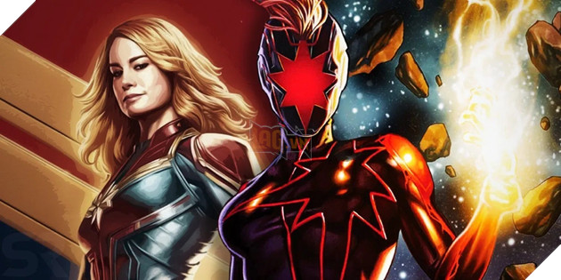
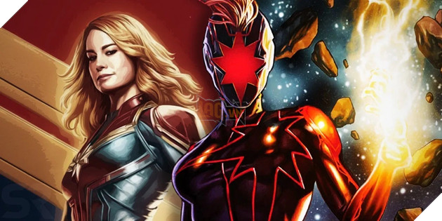

Top 5 bộ phim điện ảnh có doanh thu cao nhất 2019.
| Đạo diễn | Anna Boden and Ryan Fleck |
| Diễn viên |
Brie Larson Samuel L. Jackson Ben Mendelsohn Djimon Hounsou Lee Pace Lashana Lynch Gemma Chan Annette Bening Clark Gregg Jude Law |
Quốc gia | Hoa Kỳ |
| Doanh thu | 1.128tỉ USD |
| Nội dung |
Năm 1995, trên hành tinh Hala, thủ đô của Đế chế Kree , thành viên Vers của Starforce bị mất trí
nhớ và những cơn ác mộng tái diễn liên quan đến một người phụ nữ lớn tuổi. Yon-Rogg , người cố
vấn và chỉ huy của cô, huấn luyện cô kiểm soát khả năng của mình trong khi Trí tuệ tối cao , trí
thông minh nhân tạo cai trị người Kree, thúc giục cô kiểm soát cảm xúc của mình. Trong một nhiệm vụ giải cứu một đặc nhiệm bí mật xâm nhập vào một nhóm Skrull , những người ngoài hành tinh biến hình mà người Kree đang tham chiến, Vers đã bị bắt bởi chỉ huy của Skrull là Talos . Một cuộc thăm dò ký ức của Vers dẫn họ đến Trái đất. Vers trốn thoát và hạ cánh ở Los Angeles. Sự hiện diện của cô thu hút các đặc vụ SHIELD Nick Fury và Phil Coulson , những người mà cuộc điều tra bị gián đoạn bởi một cuộc tấn công của Skrull. Trong cuộc rượt đuổi sau đó, Vers lấy lại được một viên pha lê chứa những ký ức bị trích xuất của cô trong khi Fury giết Skrull đóng giả Coulson. Talos, cải trang thành ông chủ của Fury, Keller, ra lệnh cho Fury làm việc với Vers và theo dõi cô. Sử dụng những ký ức được trích xuất của cô ấy, Vers và Fury đi đến nơi lắp đặt Project Pegasus tại một căn cứ của Không quân Hoa Kỳ . Họ phát hiện Vers là một phi công được cho là đã chết vào năm 1989 khi đang thử nghiệm một động cơ tốc độ ánh sáng thử nghiệm được thiết kế bởi Tiến sĩ Wendy Lawson , người mà Vers nhận ra là người phụ nữ trong cơn ác mộng của cô. Sau khi Fury thông báo cho SHIELD về vị trí của họ, một đội do Talos dẫn đầu đã cải trang thành Keller đến. Fury phát hiện ra mưu mẹo của Talos và giúp Vers trốn thoát trong một chiếc máy bay chở hàng với con mèo trốn theo đường của Lawson Goose. Họ bay đến Louisiana để gặp cựu phi công Maria Rambeau, người cuối cùng nhìn thấy Vers và Lawson còn sống. Rambeau và con gái Monica tiết lộ rằng Vers là Carol Danvers, người từng như một gia đình đối với họ. Talos, đến nơi mà không có vũ khí, giải thích rằng Skrulls là những người tị nạn đang tìm kiếm một ngôi nhà mới và Lawson là Mar-Vell, một nhà khoa học Kree phản bội đã giúp họ. Talos phát một đoạn ghi âm được phục hồi từ máy bay phản lực của Lawson, khiến Danvers nhớ lại vụ tai nạn: Lawson bị Yon-Rogg giết để ngăn cô phá hủy động cơ trước khi người Kree có thể khôi phục nó. Tự phá hủy động cơ, Danvers hấp thụ năng lượng từ vụ nổ sau đó, có được sức mạnh nhưng mất trí nhớ. Danvers, Talos, Fury và Rambeau xác định vị trí phòng thí nghiệm được che đậy của Lawson quay quanh Trái đất, nơi Lawson giấu một số Skrulls, bao gồm cả gia đình Talos, và Tesseract , nguồn năng lượng của động cơ Lawson. Ở đó, Danvers bị Starforce bắt giữ và giao tiếp với Trí tuệ Tối cao. Trong cuộc trò chuyện của họ, Danvers loại bỏ bộ phận cấy ghép Kree đang ngăn chặn sức mạnh của cô, cho phép cô phát huy hết tiềm năng của mình. Trong trận chiến sau đó, Fury bắt được Goose, người được tiết lộ là người ngoài hành tinh Flerken . Ngỗng nuốt khối Tesseract và cào Fury, làm anh ta bị mù mắt trái. Danvers tiêu diệt một kẻ đánh bom Kree, buộc Ronan the Accuser của sĩ quan Kree và phi đội của anh ta phải rút lui, trước khi áp đảo Yon-Rogg trên Trái đất và đưa anh ta trở lại Hala với lời cảnh báo cho Tình báo tối cao. Danvers khởi hành để giúp Skrulls tìm thấy một thế giới quê hương mới, để lại cho Fury một máy nhắn tin đã được sửa đổi để liên lạc với cô trong trường hợp khẩn cấp. Trong khi đó, Fury thảo ra một sáng kiến để xác định vị trí của những anh hùng như Danvers, đặt tên nó theo dấu hiệu của Lực lượng Không quân của cô , "Avenger". Trong một cảnh mid-credit , lấy bối cảnh vào năm 2018, máy nhắn tin được kích hoạt [N 1] đang bị Avengers theo dõi khi Danvers xuất hiện. [N 2] Trong một cảnh post-credit, Goose trèo lên bàn của Fury và giải phóng khối Tesseract. |
| Hình ảnh |
 

|